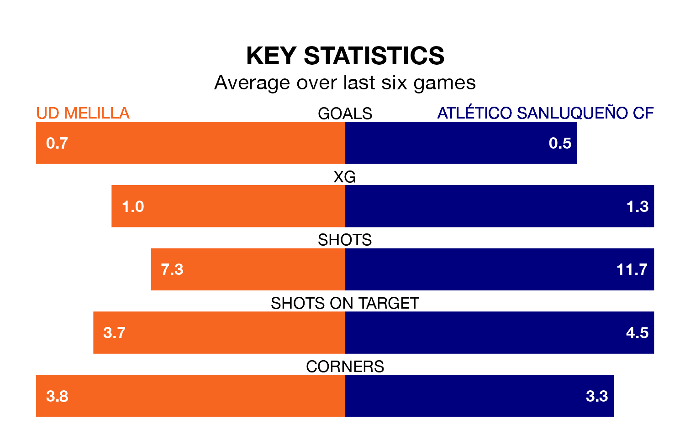

UD Melilla are on a poor run ahead of hosting Atlético Sanluqueño CF at the Estadio Álvarez Claro on Sunday, with just four points collected from their last six games.
Melilla have picked up one win and one draw in their last six Primera Division RFEF Group 2 games, and face an Atlético Sanluqueño side whose last six games have brought two wins and two draws.
Melilla are 18th in the table after 29 games, of which they have won six and drawn five, earning 23 points.
Atlético Sanluqueño are four places ahead of the home team in 14th, with eight wins and 10 draws putting them on 34 points.
With 17 goals in 29 games so far this season, Melilla are the league's second-lowest scorers with 0.6 goals per game. And they are conceding more than average, letting in 41 goals at a rate of 1.4 per game.
The visitors are also below average scorers, with 1.0 goal per game, compared to a league average of 1.1. They have conceded 1.1 goals per game.
In Francisco Mwepu, Atlético Sanluqueño have one of the league's most on-form strikers so far this season. He has notched seven goals in 21 appearances, to sit sixth in the scoring charts.
His goal rate of one every 208 minutes is quicker than that of Daniel García Beltrán, Melilla's top scorer with a goal every 332 minutes, and a total of five goals in 22 games.
Melilla's last match was on Sunday, a 0-0 draw against Linares Deportivo.
Atlético Sanluqueño lost 1-0 against Real Murcia last time out, on March 23.
Updated: 12:39 (UTC), 26/03/24